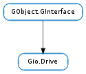

| can_eject() | |
| can_poll_for_media() | |
| can_start() | |
| can_start_degraded() | |
| can_stop() | |
| eject(flags, cancellable, callback, *user_data) | |
| eject_finish(result) | |
| eject_with_operation(flags, mount_operation, cancellable, callback, *user_data) | |
| eject_with_operation_finish(result) | |
| enumerate_identifiers() | |
| get_icon() | |
| get_identifier(kind) | |
| get_name() | |
| get_sort_key() | |
| get_start_stop_type() | |
| get_symbolic_icon() | |
| get_volumes() | |
| has_media() | |
| has_volumes() | |
| is_media_check_automatic() | |
| is_media_removable() | |
| poll_for_media(cancellable, callback, *user_data) | |
| poll_for_media_finish(result) | |
| start(flags, mount_operation, cancellable, callback, *user_data) | |
| start_finish(result) | |
| stop(flags, mount_operation, cancellable, callback, *user_data) | |
| stop_finish(result) |
None
| Name | Parameters | Return | Description |
|---|---|---|---|
| changed | Emitted when the drive’s state has changed. | ||
| disconnected | This signal is emitted when the Gio.Drive have been disconnected. If the recipient is holding references to the object they should release them so the object can be finalized. | ||
| eject-button | Emitted when the physical eject button (if any) of a drive has been pressed. | ||
| stop-button | Emitted when the physical stop button (if any) of a drive has been pressed. |
Bases: GObject.GInterface
Gio.Drive - this represent a piece of hardware connected to the machine. It’s generally only created for removable hardware or hardware with removable media.
Gio.Drive is a container class for Gio.Volume objects that stem from the same piece of media. As such, Gio.Drive abstracts a drive with (or without) removable media and provides operations for querying whether media is available, determining whether media change is automatically detected and ejecting the media.
If the Gio.Drive reports that media isn’t automatically detected, one can poll for media; typically one should not do this periodically as a poll for media operation is potententially expensive and may spin up the drive creating noise.
Gio.Drive supports starting and stopping drives with authentication support for the former. This can be used to support a diverse set of use cases including connecting/disconnecting iSCSI devices, powering down external disk enclosures and starting/stopping multi-disk devices such as RAID devices. Note that the actual semantics and side-effects of starting/stopping a Gio.Drive may vary according to implementation. To choose the correct verbs in e.g. a file manager, use Gio.Drive.get_start_stop_type ().
For porting from GnomeVFS note that there is no equivalent of Gio.Drive in that API.
| Returns: | True if the drive can be ejected, False otherwise. |
|---|---|
| Return type: | bool |
Checks if a drive can be ejected.
| Returns: | True if the drive can be polled for media changes, False otherwise. |
|---|---|
| Return type: | bool |
Checks if a drive can be polled for media changes.
| Returns: | True if the drive can be started, False otherwise. |
|---|---|
| Return type: | bool |
Checks if a drive can be started.
| Returns: | True if the drive can be started degraded, False otherwise. |
|---|---|
| Return type: | bool |
Checks if a drive can be started degraded.
| Returns: | True if the drive can be stopped, False otherwise. |
|---|---|
| Return type: | bool |
Checks if a drive can be stopped.
| Parameters: |
|
|---|
Asynchronously ejects a drive.
When the operation is finished, callback will be called. You can then call Gio.Drive.eject_finish () to obtain the result of the operation.
| Parameters: | result (Gio.AsyncResult) – a Gio.AsyncResult. |
|---|---|
| Raises: | GLib.GError |
| Returns: | True if the drive has been ejected successfully, False otherwise. |
| Return type: | bool |
Finishes ejecting a drive.
| Parameters: |
|
|---|
Ejects a drive. This is an asynchronous operation, and is finished by calling Gio.Drive.eject_with_operation_finish () with the drive and Gio.AsyncResult data returned in the callback.
| Parameters: | result (Gio.AsyncResult) – a Gio.AsyncResult. |
|---|---|
| Raises: | GLib.GError |
| Returns: | True if the drive was successfully ejected. False otherwise. |
| Return type: | bool |
Finishes ejecting a drive. If any errors occurred during the operation, error will be set to contain the errors and False will be returned.
| Returns: | a None-terminated array of strings containing kinds of identifiers. Use GLib.strfreev () to free. |
|---|---|
| Return type: | [str] |
Gets the kinds of identifiers that drive has. Use Gio.Drive.get_identifier () to obtain the identifiers themselves.
| Returns: | Gio.Icon for the drive. Free the returned object with GObject.Object.unref (). |
|---|---|
| Return type: | Gio.Icon |
Gets the icon for drive.
| Parameters: | kind (str) – the kind of identifier to return |
|---|---|
| Returns: | a newly allocated string containing the requested identfier, or None if the Gio.Drive doesn’t have this kind of identifier. |
| Return type: | str |
Gets the identifier of the given kind for drive.
| Returns: | a string containing drive ‘s name. The returned string should be freed when no longer needed. |
|---|---|
| Return type: | str |
Gets the name of drive.
| Returns: | Sorting key for drive or None if no such key is available. |
|---|---|
| Return type: | str |
Gets the sort key for drive, if any.
| Returns: | A value from the Gio.DriveStartStopType enumeration. |
|---|---|
| Return type: | Gio.DriveStartStopType |
Gets a hint about how a drive can be started/stopped.
| Returns: | symbolic Gio.Icon for the drive. Free the returned object with GObject.Object.unref (). |
|---|---|
| Return type: | Gio.Icon |
Gets the icon for drive.
| Returns: | GLib.List containing any Gio.Volume objects on the given drive. |
|---|---|
| Return type: | [Gio.Volume] |
Get a list of mountable volumes for drive.
The returned list should be freed with GLib.List.free (), after its elements have been unreffed with GObject.Object.unref ().
| Returns: | True if drive has media, False otherwise. |
|---|---|
| Return type: | bool |
Checks if the drive has media. Note that the OS may not be polling the drive for media changes; see Gio.Drive.is_media_check_automatic () for more details.
| Returns: | True if the drive contains volumes, False otherwise. |
|---|---|
| Return type: | bool |
Check if drive has any mountable volumes.
| Returns: | True if the drive is capabable of automatically detecting media changes, False otherwise. |
|---|---|
| Return type: | bool |
Checks if drive is capabable of automatically detecting media changes.
| Returns: | True if drive supports removable media, False otherwise. |
|---|---|
| Return type: | bool |
Checks if the drive supports removable media.
| Parameters: |
|
|---|
Asynchronously polls drive to see if media has been inserted or removed.
When the operation is finished, callback will be called. You can then call Gio.Drive.poll_for_media_finish () to obtain the result of the operation.
| Parameters: | result (Gio.AsyncResult) – a Gio.AsyncResult. |
|---|---|
| Raises: | GLib.GError |
| Returns: | True if the drive has been poll_for_mediaed successfully, False otherwise. |
| Return type: | bool |
Finishes an operation started with Gio.Drive.poll_for_media () on a drive.
| Parameters: |
|
|---|
Asynchronously starts a drive.
When the operation is finished, callback will be called. You can then call Gio.Drive.start_finish () to obtain the result of the operation.
| Parameters: | result (Gio.AsyncResult) – a Gio.AsyncResult. |
|---|---|
| Raises: | GLib.GError |
| Returns: | True if the drive has been started successfully, False otherwise. |
| Return type: | bool |
Finishes starting a drive.
| Parameters: |
|
|---|
Asynchronously stops a drive.
When the operation is finished, callback will be called. You can then call Gio.Drive.stop_finish () to obtain the result of the operation.
| Parameters: | result (Gio.AsyncResult) – a Gio.AsyncResult. |
|---|---|
| Raises: | GLib.GError |
| Returns: | True if the drive has been stopped successfully, False otherwise. |
| Return type: | bool |
Finishes stopping a drive.